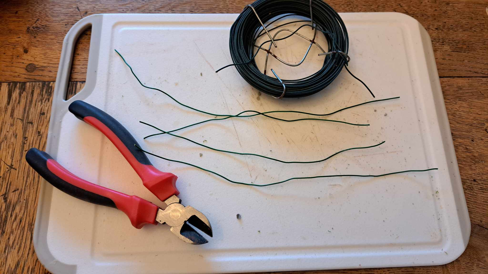
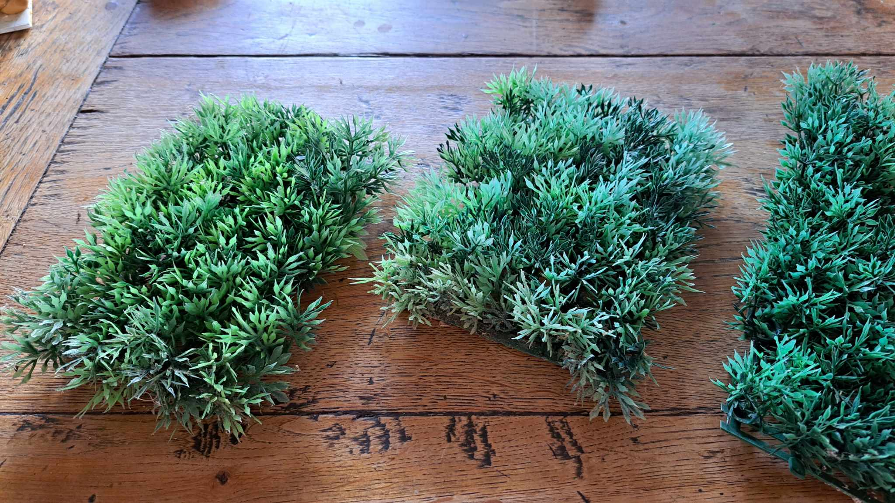
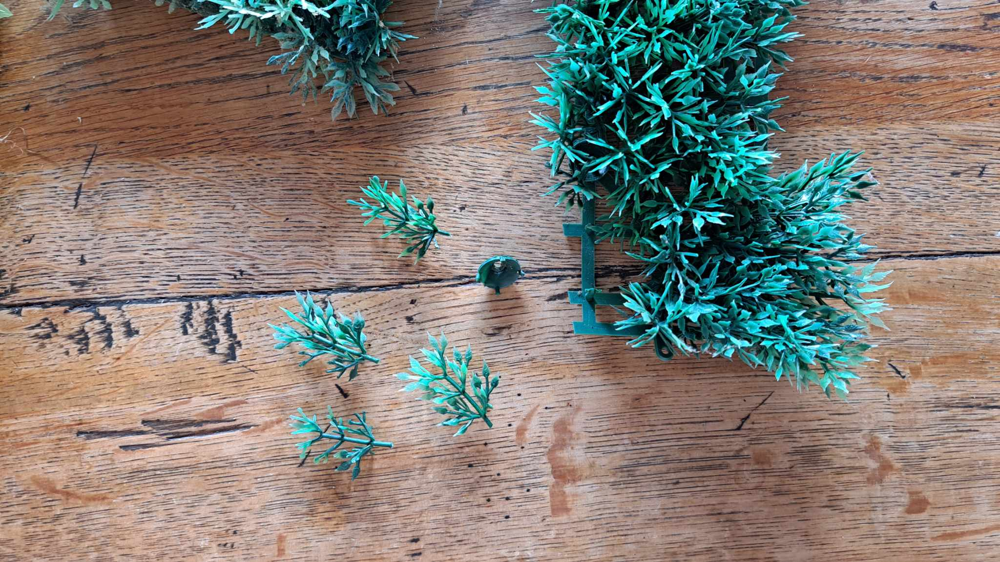
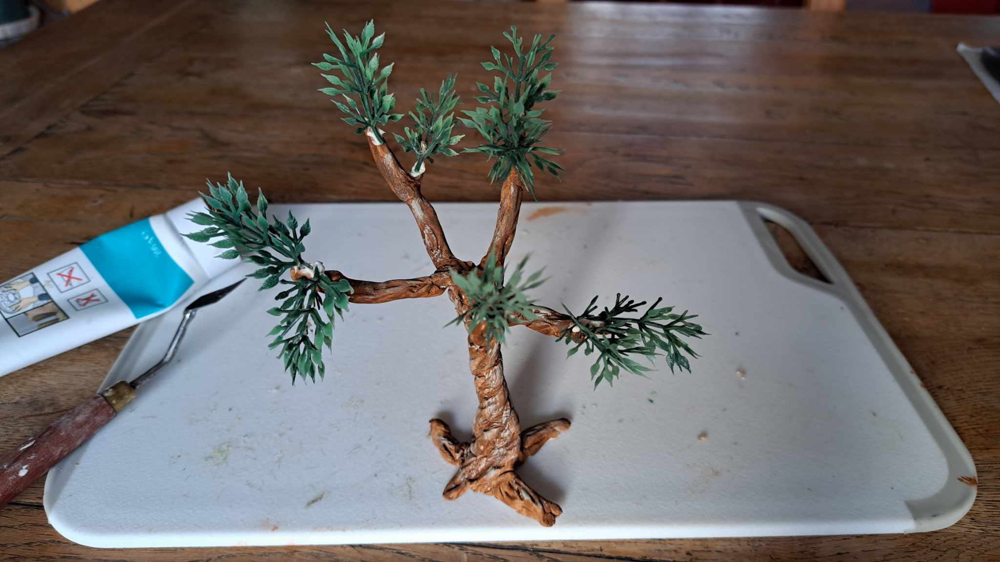
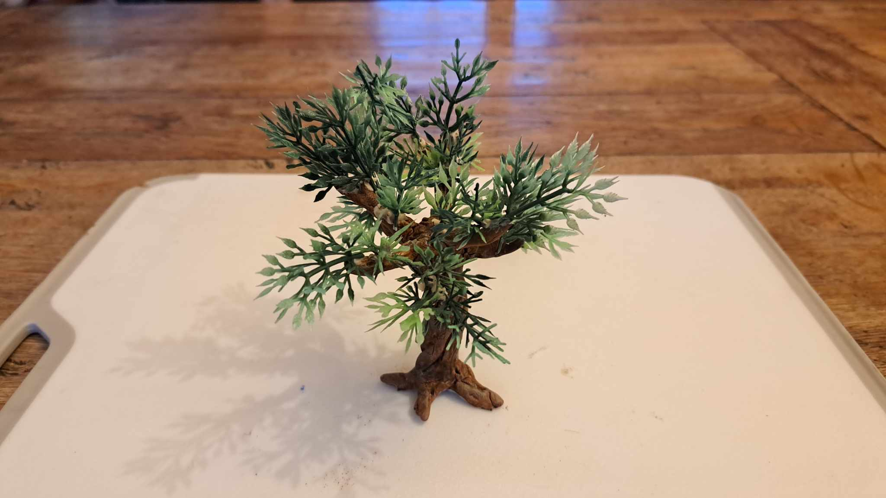

Olivier pour Santons
Outils et Matériel
- Fil de fer
- Pâte à modeler auto-durcissante
- Plante en plastique pour décors d'aquarium
- Colle
- Pince coupante
- Peinture acrylique
- Outil à sculpture
Étapes du Tutoriel
Étape 1 : La structure
Je commence par couper des bouts de fil de fer d'une longueur telle qu'elle soit le double de la hauteur de l'arbre que je veux former. Je coupe autant de morceaux de fil de fer que je veux de branches à mon arbre.

Je commence par enrouler deux fils de fer entre eux, en laissant dépasser d'un côté assez de longueur pour les racines et de l'autres pour les branches.
Puis j'enroule les autres morceaux de fil de fer autour des deux premiers, toujours en laissant les extrémités libres.
Je finis par donner la forme aux racines (pour que l'arbre tienne debout) et aux branches. Je coupe avec une pince les excédents.
Étape 2 : Le modelage du tronc
Je réalise autant de boudins de pâte à modeler que j'ai de branches.
Je commence par enrouler un boudin autour de la structure en fil de fer; en commençant par les racines et en finissant par les branches.
Puis j'enroule les autres boudins.
Avec un outil de sculpture, je forme mon tronc en donnant un aspect plus naturel. Je vérifie que les racines permettent bien à l'arbre d'être stable.
Une fois la pâte à modeler sèche, je peins avec de la peinture acrylique. Je commence par une couche de marron.
Puis je place des reflets gris clair sur le troncs pour faire un aspect vieilli.
Étape 3 : Les feuilles
J'utilise une plaque de plante en plastique pour aquarium et je coupe chaque brin individuellement.
 Étape 3 : L'assemblage
Je colle un par un les brins de feuilles sur le tronc en veillant à garder un aspect naturel au feuillage.
 